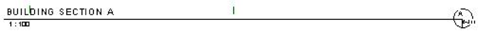
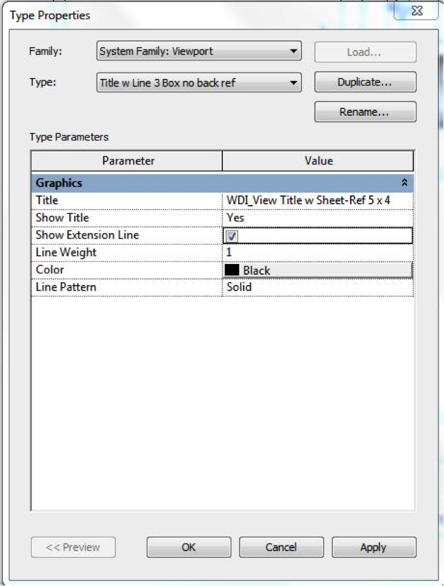

Parameters versus Properties
In his comment on reading material asset data, Alexander Buschmann points out that this same information can be accessed without retrieving, reading and converting the data directly from the undocumented built-in parameters.
Instead and more comfortably, you can use the following official properties on the appropriate classes:
Material material = null; foreach( Material mat in e.Materials ) { material = mat; break; } PropertySetElement pse = doc.GetElement( material.StructuralAssetId ) as PropertySetElement; StructuralAsset asset = pse.GetStructuralAsset(); double a = asset.WoodBendingStrength; double b = asset.WoodParallelCompressionStrength; double c = asset.WoodParallelShearStrength; double d = asset.WoodPerpendicularCompressionStrength; double f = asset.WoodPerpendicularShearStrength; // ... and lots of other properties ...
Even though a large and growing number of properties are available through this approach, the "Tension Parallel to Grain" one is actually currently not included in these, so you will indeed still have to use the direct parameter access anyway in this particular case.
Going through parameters is more generic, and most properties available on the classes are also available via parameters.
Parameters can also be used to define a parameter filter for a filtered element collector, so it is always useful to know that they are there and what they mean.
To discover the existence and use of specific parameters, you can use RevitLookup and BipChecker to explore a simple model. Modify the model interactively through the user interface and observe the effect on the parameters to discover their use and meaning.
He also adds:
For convenience, we use extension methods in our code to do this kind of thing, e.g.
public static class ElementExtensions { public static Material material( this Element e ) { foreach( Material m in e.Materials ) { return m; } return null; } }
If this class part of an imported namespace, it can be called as:
Material material2 = e.material();
The compiler will translate that to this:
Material material3 = ElementExtensions.material( e );
It is mostly just convenience, but it also improves the readability of the code, since the entire loop above collapses into just this one single property call.
Many thanks to Alexander for pointing this out!
Here are some pointers to other extension methods that we discussed in the past:
- Scale a curve
- GetPolygon extension methods
- C# and .NET little wonders
- Top faces of sloped wall
- Unit conversion and display string formatting
- Materials collection and filtering
- RevitRubyShell implementation and installer
- Room in area predicate via point in polygon test
- FamilyParameter IsShared property
Show Viewport Extension Line or Label
Alexander also pointed out some other useful parameter to be aware of on the ViewType class in his comment on changing the viewport type, and my colleague Joe Ye just ran into a case dealing with the very same issue:
Question: We can change the length of the view title line:

For that we have to go to edit type and check the show extension line toggle:

It is possible to achieve this using the API?
Answer: Yes, you can set that check box via the API as well. Here is the process:
- Get the view type object.
- Get the parameter that represents the "Show Extension Line".
- Change the parameter value.
Here is an example of performing these three steps:
ElementId typeId = viewport.GetTypeId(); ViewType viewtype = doc.GetElement( typeId ) as ViewType; Parameter withLine = viewtype.get_Parameter( BuiltInParameter .VIEWPORT_ATTR_SHOW_EXTENSION_LINE ); withLine.Set( 0 ); // No Line withLine.Set( 1 ); // Has Line
Alexander also points out that the built-in parameter VIEWPORT_ATTR_SHOW_LABEL affects the view label in a similar manner.